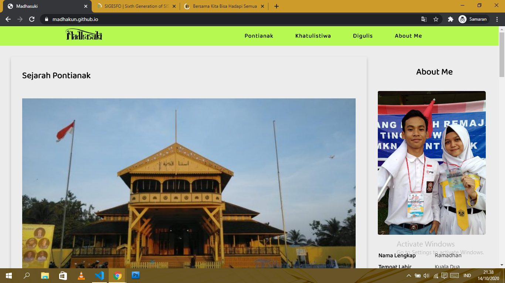
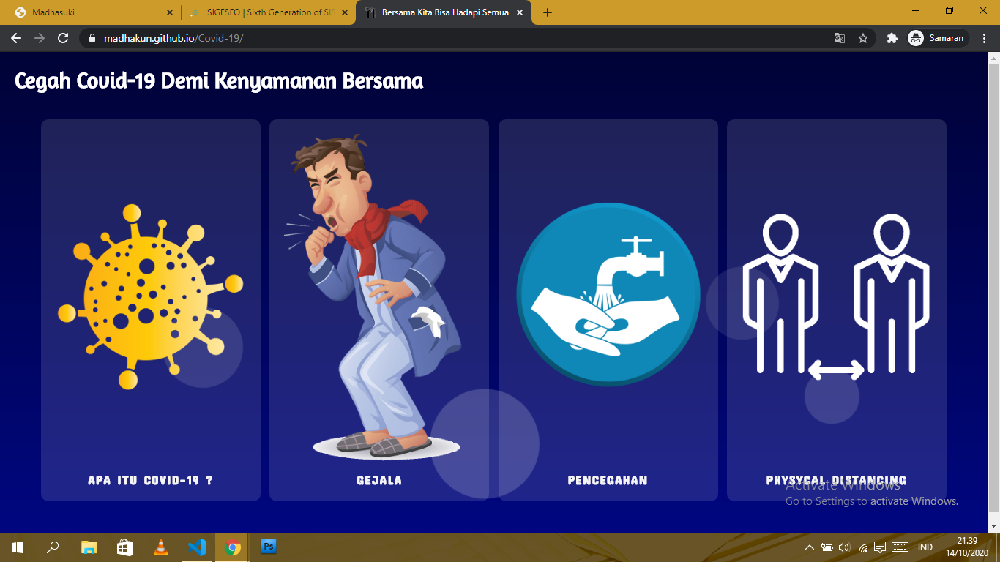

Proyek Pembelajaranku
Proyek website yang pernah saya buat

Ini adalah proyek pertama saya dimana proyek ini saya kerjakan tepat saat saya mulai belajar web programming pada awal masa PSBB.

Ini adalah proyek kedua saya dimana proyek ini saya kerjakan demi memenuhi syarat untuk memasuki salah satu UKM di Universitas Tanjungpura yaitu KSR PMI Unit UNTAN.